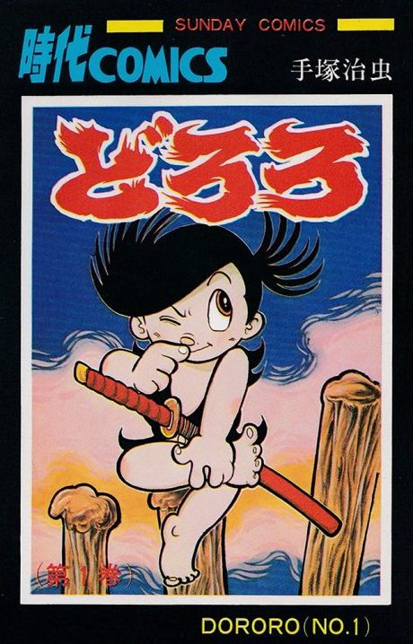

Dororo
どろろ
The anime takes the story to Own end.
8.1AniList score
—Animeter, no votes yet
24episodes
Is it worth pushing through?
Built from what visitors report across all 24 episodes.
Loading reports…Checking what other people said about this one.
Sign in above with your email to add your report.